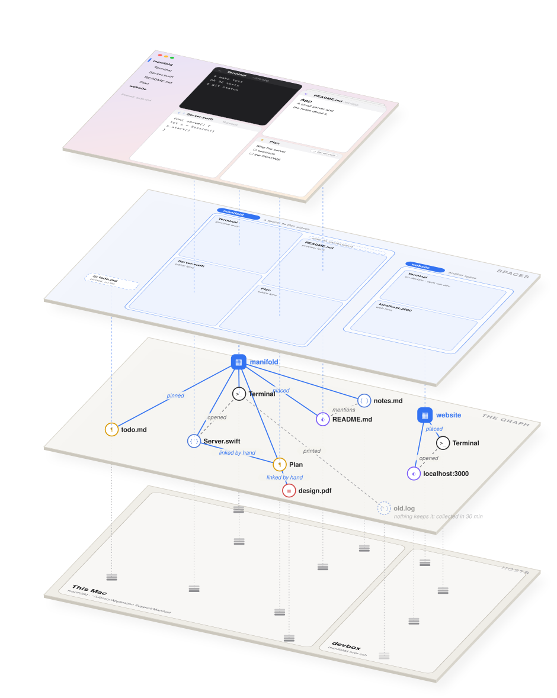
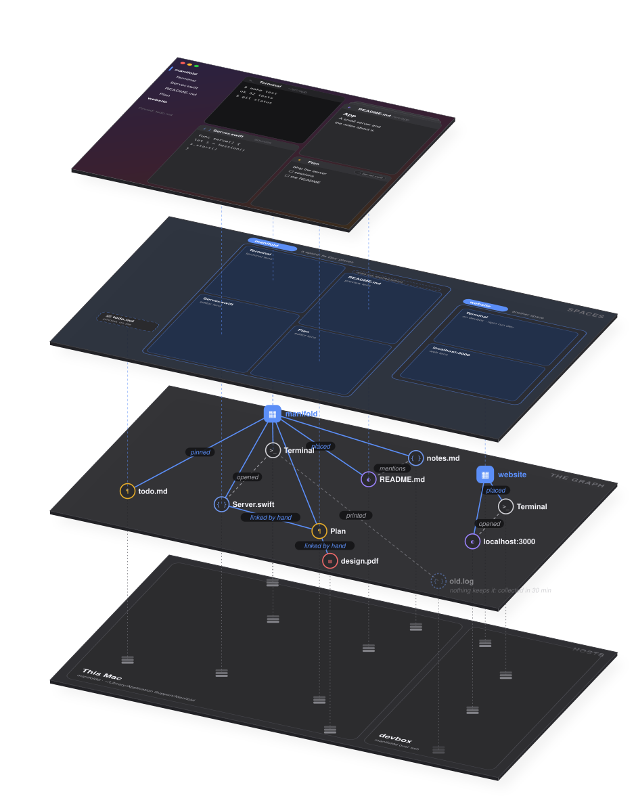

A programming environment for the Mac
Built around terminals and the work that grows out of them — on this Mac, and on the machines you work on.
Manifold works like a wiki rather than a set of windows. Terminals, files, notes, folders and web pages are blocks, and everything is linked: a space links the blocks it shows, a note the blocks it mentions, and what you do leaves links behind — this terminal opened that file, this search found that line. You arrange blocks in spaces, come back to them, and follow the links back.


Manifold runs on macOS 15 or later. It builds from source: Ghostty's terminal library first (the script fetches Zig and Ghostty itself), then the app.
git clone https://github.com/mariusae/manifold
cd manifold
scripts/build-ghostty.sh # once: Zig and Ghostty into vendor/
scripts/build-app.sh run # builds build/Manifold.app and opens itThe first time, Manifold opens a space with a terminal in your home
folder. Everything you do from there is kept by manifoldd, a
server the app starts and that outlives it: quit and reopen, and every
terminal is back with its processes still running.
mani on your PATH; in
Manifold's own terminals it's there already.ssh understands. Manifold installs its server there and its
blocks join yours — see Remote hosts.mani skill install teaches it to see your
screen — see Agents.Each of these opens as a block of its own, below this one. ⌘-click to open beside instead.
A block is anything Manifold shows: a terminal, a file, a note, a folder, a web page, a search, a diff, a git repository, an agent. Each has an identity that outlives its window — a file's block keeps its links through a rename — and a history you can scrub through.
A space is a grid of tiles: columns, each a stack of tiles top to bottom, every one of them a block, all visible at once — acme's tiling. A new tile takes the lower half of the tile it came from; a closed tile gives its room to its neighbour. Nothing hides behind anything except what you stacked.
A space is a block too, so it has a title (⇧⌘R names it; an unnamed one is called by what it holds), and you can have as many as you like: ⌥⌘T makes one with a terminal in it, ⌘1–⌘9 and ⌘` go between them.
The same block can be in several spaces, or twice in one, through different lenses — a Markdown file in an editor on the left and a preview on the right (⌥⇧⌘P), every keystroke showing in both.
See also Tiles and the bar and What stays, what goes.
Three ways, which agree — one table of kinds makes all three:
web example.com, search TODO, terminal make test, note buy milk. ↩ makes it in the active column, ⌘↩ beside the focused tile, ⌥↩ over it.mani new <kind> [what] reads the same words in a shell.Every tile has a bar across its top: the block's symbol and title, where it is in grey, its links, its status, and maximize and close.
A tile's links are the linked blocks' faces, stacked, most recent in front, each with a chevron for its direction (› links to, ‹ linked from). Point at them and they fan out along the bar; rest on one and its summary card shows beneath. Click to follow it by the one rule; right-click for its menu.
A tile shrinks along one ladder, by the room it has: its content; then, with only a few lines' room, its summary card — the block in a few lines, a terminal's last command and how it ended, a note's first lines; then its bar alone; then stashed behind its neighbour (⌘M). Shrink to Summary (⇧⌘M) is only a height on that ladder: resize, and it's back.
Try it here: drag the gap under a tile until it's a few lines tall.
One rule, for every click that opens something — a link in a note, a path in a terminal, a search hit, a sidebar row, a tile's link, a row of Open Quickly chosen with ↩:
| click | goes to it, wherever a tile shows it, in any space — or, if none does, opens it below the tile you clicked in |
| ⌘-click | opens it beside, below the tile, taking its lower half |
| ⌥-click | opens it over the tile, which goes behind it — a stack |
| ⇧⌘-click | gives it to the system: an address to your browser, a file to its app |
In a terminal, ⌘ is what makes a click a click on a link at all, so there ⌘ is beside and ⌥⌘ over.
Three views go on in place on a plain click, as a browser does: a web page's link, a preview's link to another Markdown file, a folder in a listing. ⌘[ and ⌘] go back and forth along what the tile showed.
What you open from inside a block is linked to it — this terminal opened that file — and the link shows on both tiles' bars.
A tile can have others behind it: what you ⌥-click opens over it, a bar dropped on another stacks it there, ⌘M stashes the focused tile behind its neighbour. Those behind peek out above the bar as sheets.
The Guide on this page has Getting started stacked behind it — click its sheet.
Nothing is filed and nothing is saved by hand into a project. Instead:
Terminals off screen with an idle shell go dormant after a while: the shell ends, the transcript stays, and a new shell starts under it when you come back.
Open Quickly (⌘O) finds every block and space your hosts keep — by title, by where it is, by what its summary says (a command run a while ago, an agent's last words). Each row is the block's summary card, nearest first: this space, then what's linked to where you are. ↩ goes, ⌘↩ opens beside, ⌥↩ over; ⇥ switches to In Blocks, which looks inside their text.
The outline (⌘P) goes through the focused tile's outline — a Markdown file's headings, a source file's symbols, a terminal's commands, an agent's turns, a PDF's contents — and ⇥ widens it to the whole space. ⇧⌘P filters the outline in the tile's own sidebar.
Find in Files (⇧⌘F) searches a project's files on disk, as a search block of its own.
On this page, ⌘K (or /) opens Open Quickly.
The sidebar shows the same graph three ways (⌥⌘1–⌥⌘3):
Rows open by the one rule; rest the pointer on one for a picture of the tile. ⌃⌘S keeps the sidebar shown or lets it slide out at the window's edge.
Every block has a status — working (with progress), done, needs you, failed — that programs report themselves (the OSC 7501 protocol), and that searches, git and saves report as they go. It shows at the right of each bar and sidebar row; the Dock counts what needs you.
Terminals are drawn by Ghostty's library and attached to a shell the server owns, so quitting the app ends nothing: reopen it and every terminal is back, its processes still running.
path:line, or an address to open it below; ⌥⌘-click to stack it over.$EDITOR opens files in Manifold, over the terminal, and waits for you to close them — ⌥⌘W saves and closes in one.localhost:3000, clicked, opens here, its port forwarded.A file opens to be viewed — Markdown rendered as go.dev sets its pages, code highlighted — and ⌘↩ turns it into an editor, in place.
A note (⇧⌘N) is Markdown, shown richly as you write — headings set, the markers dimmed until the caret is on their line — and kept as a block, or saved as a file wherever you like (⌘S).
[[a title]] links to whatever block has it, as a wiki does — and the link shows from both ends.A folder opens as one tree, with a preview of the file chosen beside it when there's room. What git or Sapling ignores is left out (⇧⌘. shows it).
git diff | mani diff shows any patch as a diff block.An address opens in an embedded browser, in a tile like any other — the bar is its address field (⌘L), with back, forward and reload.
localhost address from another host's terminal opens here, its port forwarded for you.An agent is a terminal running your coding agent — Claude Code, Codex, Gemini CLI, Pi — started with File ▸ New Agent (⌥⌘A) or Launch Agent Here.
mani skill install gives agents a guide to mani, so "the code I highlighted" or "the diff on my right" means what you see.mani ui.A shell notebook (⌃⇧⌘N) is a column of cells run in one shell that lives on — a variable set in one cell is there in the next. ⌘↩ runs a cell, ⇧↩ runs it and moves on, ⌘. interrupts.
A panel is a small UI made by mani ui new from JSON — labels,
buttons, fields, sliders, progress, tables — in the system's own controls.
A script waits for what's done in it with mani ui wait.
Manifold ▸ Attach to Host… takes anything ssh understands (or a
provider of your own, provider:name). Manifold installs its server
there — Linux or a Mac — and runs it, so a remote terminal, file or folder is
placed, linked and found like a local one, and outlives the connection.
mani commandManifold from a shell — for you, and for the agents in its terminals.
Blocks are named by id, path, title, or position: @here, @focused,
@selection, @left, @right:diff…
mani ls # the space's tiles, and what each shows
mani read @selection # the text last selected, anywhere
mani open src/main.swift:42 # a file, at a line, below this terminal
mani new note --preview < plan.md
mani run @left 'make test' --wait
git diff | mani diff
mani ui new < form.json # a small panel, from JSON
mani watch # a JSON line for each thing that happensA script can make a space and fill it — MANI_SPACE has every command after act there:
export MANI_SPACE=$(mani new space --title app --cwd ~/src/app)
mani new agent --right --size 0.6 --run "read the README and wait"
mani new git --at @leftmost --below
mani new terminal --at @leftmost --below --size 0.3 --run "make test"mani help lists every command; each takes --help.